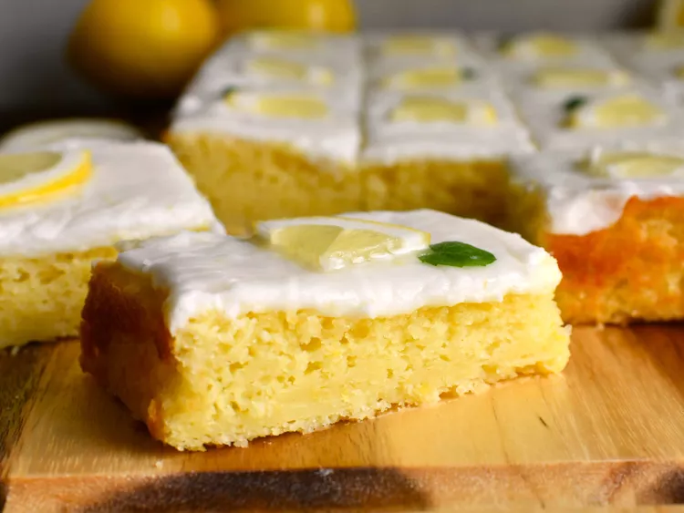

Lemon Sheet Cake
A few needed details to consider
- Preparation time: 20-25 mins or less
- Cooking time: 20-30 mins or less
- Serving per Preparation: 24
- Calories: 186g
- Protein: 2g
- Fat: 4g(maybe from the fish oil)
- Carbs: 35g
Final Product

Tiny Description
This homemade lemon sheet cake is topped with a sweet and tart lemon glaze.
It's light, lemony, and perfect for pleasing a crowd at your next summer party!
List of required ingredients
- 10x15-inch baking pan or tray
- 2 cups cake flour
- 1 teaspoon baking powder
- 1 teaspoon baking soda
- 1/2 teaspoon salt
- 1 and a third cups white sugar
- 1/2 cup unsalted butter, softened
- 2 large eggs, at room temperature
- 1 cup yogurt
- 1 cup freshly squeezed lemon juice
- 1 tablespoon of fresh lemon zest
- 3 cups powdered sugar
- 6 tablespoons freshly squeezed lemon juice
Steps to be followed(You would definitely need an oven to bring stuff together)
-
Preheat the oven to 350 degrees F (175 degrees C).
-
Grease a 10x15-inch baking pan.
-
To make the cake: Combine flour, baking powder, baking soda, and salt together in a large bowl patiently.
-
To make the cake: Combine flour, baking powder, baking soda, and salt together in a large bowl.
-
Add yogurt, lemon juice, and lemon zest. Add cake flour mixture and mix until incorporated.
-
Pour cake batter into the prepared pan.
-
Bake in the preheated oven until a toothpick inserted into the center comes out clean, 20 to 25 minutes.
-
Let cool on a wire rack completely.
-
To make the glaze: Mix powdered sugar and 1/4 cup plus 2 tablespoons lemon juice together in a bowl until well combined.
-
Pour over cooled cake.